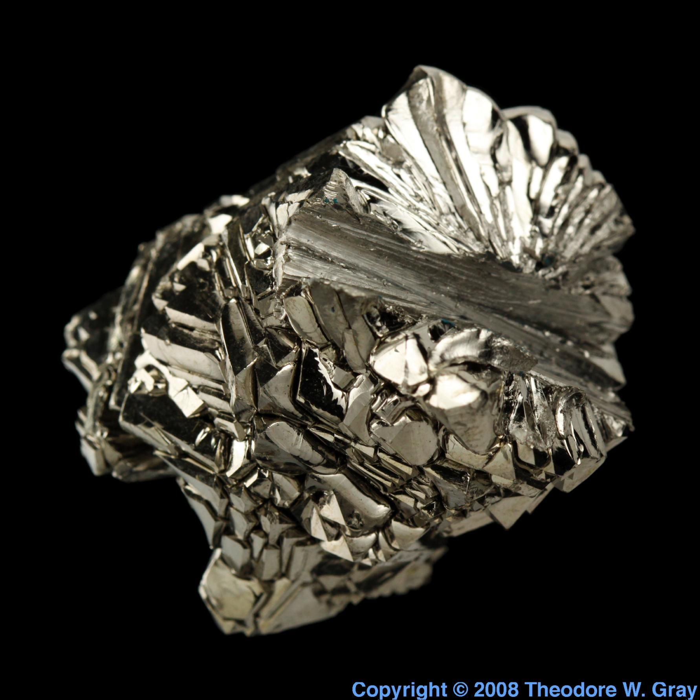
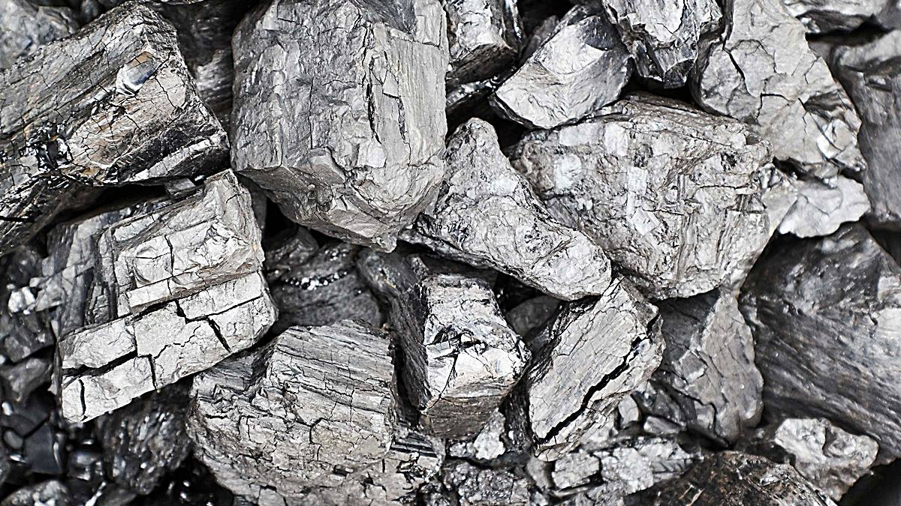

Autor: Llontop Joao Alvarez
Sección: 3ero "I"
Institución: I.E. Nicolás La Torre (JLO - Chiclayo)
El Titanio Ti
¿Qué es el Titanio?

El Titanio es un metal de transición de color gris plateado. En la ciencia e ingeniería es altamente valorado por su impresionante resistencia a la corrosión y su increíble relación dureza-peso. Es tan fuerte como el acero, pero un 45% más ligero, lo que lo hace indispensable para la industria moderna.
Propiedades Principales
Estado Físico
Sólido a temperatura ambiente.
Color y Brillo
Gris metálico, brillante y reflectante.
Alta Resistencia
Soporta temperaturas extremas y no se deforma.
Biocompatible
El cuerpo humano no lo rechaza ni se oxida en su interior.
Ficha Técnica de Identificación

- Nombre del elemento: Titanio
- Símbolo químico: Ti
- Número atómico: 22
- Grupo y Período: Grupo 4, Período 4
- Estado físico: Sólido
- Características top: Ultraligero, inoxidable y biocompatible.
Obtención e Importancia
Se encuentra en la corteza terrestre en minerales como el rutilo y la ilmenita. Su extracción requiere un proceso químico avanzado conocido como "Proceso Kroll".

Es la columna vertebral de la industria aeroespacial, utilizándose en turbinas, motores de aviones y cohetes espaciales. En la medicina, salva vidas al ser el material principal para implantes dentales y prótesis óseas.
⚠️ Riesgo Asociado
En su forma sólida es seguro, pero en forma de polvo fino es altamente inflamable. En entornos industriales, el polvo de titanio puede causar explosiones si se expone a chispas o calor extremo, por lo que requiere ventilación y EPP estricto.